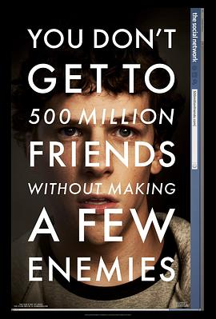
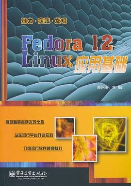

2014年3月
8 条
其中 0 条带正文
广播发布后不可编辑，所以每条都是那一刻的原话。
2014-03-30 22:11:30
看过  纸牌屋 第一季 / House of Cards Season 1
纸牌屋 第一季 / House of Cards Season 1
2014-03-23 16:37:42
 辛德勒的名单 / Schindler’s List
辛德勒的名单 / Schindler’s List2014-03-12 01:16:49
看过 
2014-03-11 21:19:24
读过 
2014-03-09 20:10:07
在读
2014-03-09 20:00:31
2014-03-08 22:53:11
2014-03-04 20:56:51
看过 小小克星！Refrain / リトルバスターズ！〜Refrain〜